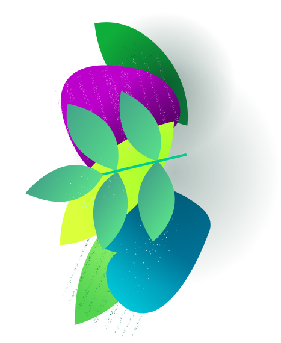

Начинаем с простенького. Судя по мультфильму, Чебурашка и Гена много гуляли и ходили пешком. А вот если бы они устали, то могли бы спокойно воспользоваться любым другим способом передвижения, кроме одного. Какого?